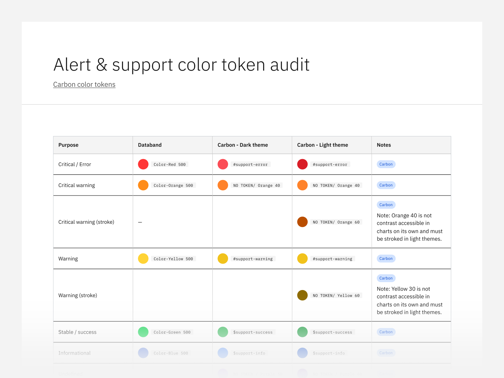
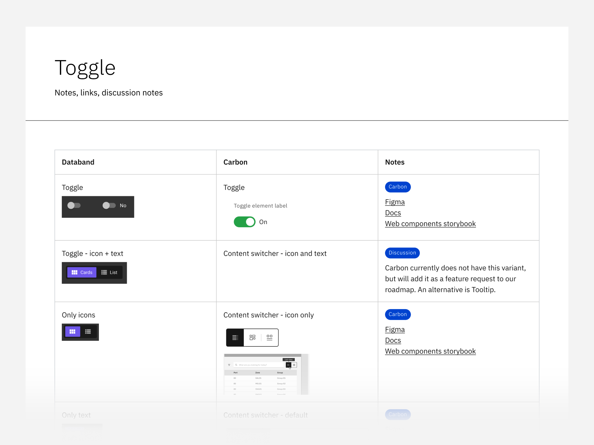
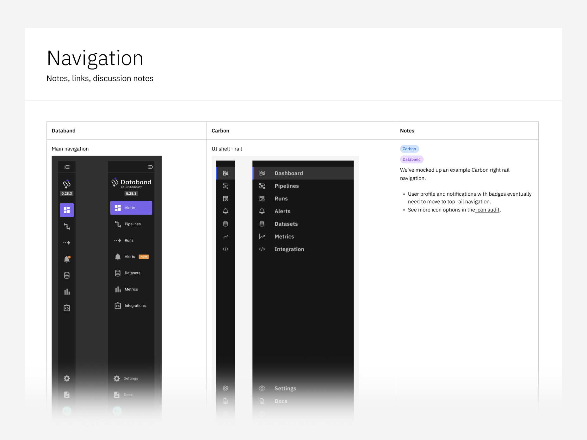

Migrating IBM Acquisitions to the Carbon Design System
Role: design lead
March 2023 - May 2023

In 2022 and 2023, IBM acquired at least 16 new products
specializing in data management, artificial intelligence, and
hybrid cloud computing. Integrating these products into the IBM
portfolio required adopting the Carbon Design System to ensure a
cohesive brand and user experience. Using Carbon guarantees that
products meet IBM's high accessibility standards—exceeding WCAG
guidelines—which is essential for securing U.S. federal contracts.
Furthermore, by reducing redundant design and development work,
Carbon significantly cuts costs.
One study
found that using Carbon made the creation of a simple form page
47% faster to develop versus coding it from scratch.
Due to my experience as a product designer on the Carbon team as
well as a strong track record of developing educational content at
IBM, I was tasked with designing a 'Carbon migration playbook' and
aiding product teams Databand, Polar, Envizi, Instana, and Randori
with their migrations, to varying degrees of involvement. I
developed a migration playbook and personally implemented it with
Databand before scaling it to other teams.
I began my project by interviewing several teams transitioning to
Carbon, gathering insights to identify best practices and
challenges. My interviews revealed that teams needed clarity on
why Carbon is necessary and how it benefits their product. Many
teams struggle to audit their existing UI components to determine
which have direct Carbon equivalents and which require
modification. In fact, several product teams I worked with did not
have a design system at all. Additionally, teams must balance
Carbon migration with ongoing feature development, ensuring
accessibility compliance while also dealing with technical debt
and potential re-architecture challenges. Practices that led teams
towards migrating to Carbon included:
- Clear communication early in the acquisition process that Carbon migration is a priority, with a focus on its importance from both user and business perspectives.
- Strong collaboration between project managers, designers, and developers to create a migration plan.
- A designer skilled in quickly mapping Carbon assets to the existing product in Figma, enabling early feasibility discussions with developers.
- A strategy to prioritize migrating smaller components—such as typography, colors, icons, toggles, buttons, text inputs, dropdowns, and page headers—before tackling larger components like the data table in later phases.
- Clear communication early in the acquisition process that Carbon migration is a priority, with a focus on its importance from both user and business perspectives.
- Strong collaboration between project managers, designers, and developers to create a migration plan.
- A designer skilled in quickly mapping Carbon assets to the existing product in Figma, enabling early feasibility discussions with developers.
- A strategy to prioritize migrating smaller components—such as typography, colors, icons, toggles, buttons, text inputs, dropdowns, and page headers—before tackling larger components like the data table in later phases.
I created a website called “Migrate to Carbon”, which guides teams
through activities to develop a phased roadmap. The three key
activities I designed are: an asset audit, accessibility audit,
and migration sizing. The asset audit maps current UI components
to Carbon components, while the accessibility audit evaluates
compliance and highlights areas for improvement. Migration sizing
is used to estimate development effort and plan a phased rollout.
Breaking migration into manageable phases helps teams integrate
Carbon incrementally while keeping product development on track.
Phase 1 focuses on aligning branding elements like fonts, colors,
icons, and form elements. Phase 2 emphasizes implementing core and
custom components while ensuring accessibility compliance.
Finally, Phase 3 refines user experience, implements data
visualization, and achieves full accessibility compliance. This
structured framework enables teams to adopt Carbon methodically,
while customizing their approach according to team capabilities
and complexity of the product.

Databand dashboard before adopting the Carbon Design System.
Right after the launch of the migration playbook, IBM acquired
Databand, a data observability platform based in Tel Aviv. I
introduced myself to the team and presented the value of Carbon,
and gained initial buy-in from designers. This introduction also
allowed me to learn about the unique features of their product and
the release deadlines they were managing.
Databand product did not have a design system in Figma, so I
offered to do the component audit. I systematically documented
their product's elements, including type tokens, color tokens,
icons, and statuses, as well as the majority of their components,
and mapped them to Carbon equivalents using the audit templates I
had created in the playbook. Along the way, I conducted an
accessibility assessment that highlighted both minor and major
issues that needed attention. For instance, their product
frequently used popovers with interactive elements. A more
appropriate solution was to replace these with toggle tips,
allowing for improved keyboard navigation and screen reader
access. The third activity, migration sizing, required developers
from both Databand and Carbon to come together in a workshop, and
the result was a clear timeline based on their team size and
capabilities. These efforts put the team on track to complete
phases 1 of their migration. They are completing phase 2, which
involves more complex user flows and addressing components that
don't have a Carbon equivalent.

After my collaboration with Databand, I moved on to other
projects, and teams had to independently use the migration
activities. However, teams were moving at a slower pace than
anticipated, and it became evident that having a Carbon expert to
guide them through the process would improve time to migration. To
further accelerate Carbon adoption, IBM is investing in a
dedicated 12-person team in Dublin, Ireland, to perform the tasks
I mentioned above.
Through this work, I developed scalable educational materials for
Carbon migration, helped multiple acquisition teams streamline
their integration process, improved my expertise in Carbon and
product migration strategy, and influenced IBM's decision to
expand migration support with a dedicated team.